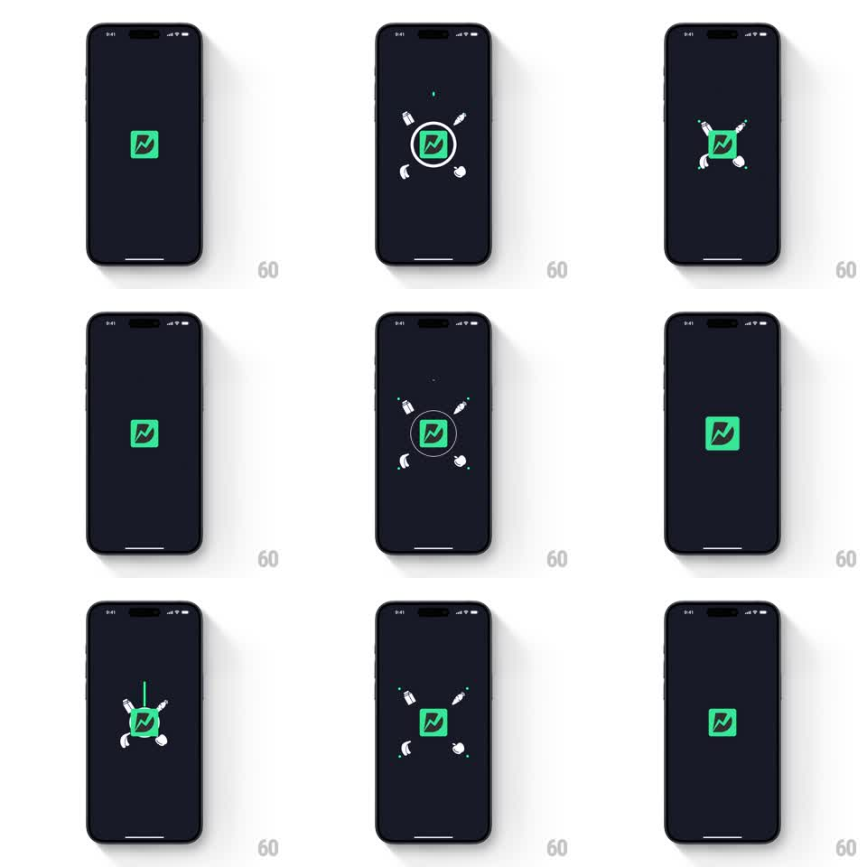

Media
Frame-by-frame

Rebuild this animation 1:1: Dunzo's splash - on a dark navy screen the green Dunzo logo pulses at center while white line-drawn grocery icons (milk carton, carrot, croissant, apple) orbit around it on a dashed ring, alternating between tight orbit and an X-shaped scatter.

Rebuild this animation 1:1: Dunzo's splash - on a dark navy screen the green Dunzo logo pulses at center while white line-drawn grocery icons (milk carton, carrot, croissant, apple) orbit around it on a dashed ring, alternating between tight orbit and an X-shaped scatter. ## Integration Integration: stack-agnostic spec - springs given as stiffness/damping, timed motions as duration + curve; map every value to your framework and animation library of choice. ## Scene Dark navy splash. Center: the green rounded-square Dunzo logo (white D with a lightning bolt). Around it: white line-art grocery icons - milk carton, carrot, croissant, apple - arranged on a thin dashed circular ring, periodically flying out to the four corners in an X formation and returning. ## Motion spec Pattern: orbiting grocery icons with pulse and scatter. - The logo pops in (scale 0.6 -> 1.1 -> 1, spring ~320/16) and idles with a soft pulse (scale 1 -> 1.04, 1.6s sine). - The dashed ring fades in (200ms) with the four icons taking compass positions; the ring rotates slowly (14s per turn, linear) while icons stay upright. - Every ~3s: the icons scatter outward to the corners (translate to X positions, 400ms ease-out, slight rotation +/-15deg) as the ring fades, hold 500ms, then spring back to the ring (spring ~280/18) as the ring redraws. - A small green dot accents the top of the ring, pulsing in sync with the logo. ## Calibration - The scatter is the playful beat - snappy out, springy back. - Icons are line art; the green logo is the only filled element. ## Reduced motion Logo and icons appear statically in the orbit formation. ## Don't miss - Icons keep upright orientation through both orbit and scatter. - The dashed ring breathes (dash offset animates slowly) even when still.